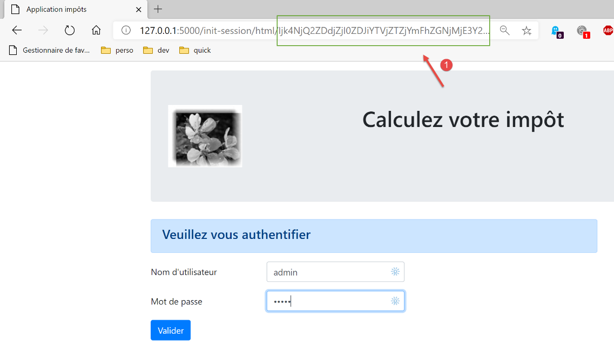

34. Esercizio pratico: versione 14

La cartella [http-servers/09] della versione 14 si ottiene copiando la cartella [http-servers/08] della versione 13.
34.1. Introduzione
CSRF (Cross Site Request Forgery) è una tecnica di furto di sessione. Viene spiegata in questo modo su Wikipedia (https://fr.wikipedia.org/wiki/Cross-site_request_forgery):
- Malorie riesce a scoprire il link che permette di eliminare il messaggio in questione.
- Malorie invia un messaggio ad Alice contenente una pseudo-immagine da visualizzare (che in realtà è uno script). Il codice URL dell’immagine è il link allo script che permette di eliminare il messaggio desiderato.
- Alice deve avere una sessione aperta nel proprio browser per il sito preso di mira da Malorie. Si tratta di una condizione necessaria affinché l’attacco vada a buon fine in modo silenzioso, senza richiedere una richiesta di autenticazione che metterebbe in allerta Alice. Tale sessione deve disporre dei diritti necessari per eseguire la richiesta distruttiva di Malorie. Non è necessario che una scheda del browser sia aperta sul sito di destinazione né che il browser sia avviato. È sufficiente che la sessione sia attiva.
- Alice legge il messaggio di Malorie; il suo browser utilizza la sessione aperta di Alice e non richiede un'autenticazione interattiva. Tenta di recuperare il contenuto dell'immagine. Nel farlo, il browser attiva il link ed elimina il messaggio, recuperando come contenuto dell'immagine una pagina web di testo. Non riconoscendo il tipo di immagine associato, non visualizza alcuna immagine e Alice non si accorge che Malorie le ha appena fatto cancellare un messaggio contro la sua volontà.
Anche spiegata in questo modo, la tecnica del CSRF è difficile da comprendere. Facciamo uno schema:

- in [1-2], Alice si collega al forum (Sito A). Questo forum mantiene una sessione per ogni utente. Il browser di Alice memorizza localmente questo cookie di sessione e lo invia ogni volta che effettua una nuova richiesta al sito A;
- in [3], Malorie invia un messaggio ad Alice. Quest’ultima lo legge con il proprio browser. Il messaggio letto è nel formato HTML e contiene un link a un’immagine del sito B. In realtà questo link rimanda a uno script JavaScript che viene eseguito una volta arrivato sul browser di Alice;
- questo script JavaScript effettua quindi una richiesta al sito A. Il browser di Alice invia automaticamente la richiesta con il cookie di sessione memorizzato localmente. È qui che avviene l’attacco: Malorie è riuscita a interrogare il sito A con i diritti (di sessione) di Alice. A questo punto, indipendentemente da ciò che accade, l’attacco è andato a buon fine;
Per contrastare questo tipo di attacco, il sito A può procedere nel modo seguente:
- ad ogni scambio [1-2] con Alice, il sito A invia una chiave, denominata in seguito token (gettone) CSRF, che Alice deve restituirgli nella richiesta successiva. Pertanto, ad ogni richiesta Alice deve inviare due informazioni:
- il cookie di sessione;
- il token CSRF ricevuto nella risposta alla sua ultima richiesta al sito A;
La protezione sta proprio qui: se il browser rinvia automaticamente al sito A il cookie di sessione, non fa lo stesso con il token CSRF. Per questo motivo, lo scambio 6-7 effettuato dallo script di attacco verrà rifiutato poiché la richiesta 6 non avrà inviato il token CSRF;
Il sito A può inviare ad Alice il token CSRF in vari modi per un’applicazione HTML:
- può inviare, ad ogni richiesta, una pagina HTML in cui tutti i link conterranno il token CSRF, ad esempio [http://siteA/chemin/csrf_token]. Alla richiesta successiva, quando Alice cliccherà su uno di questi link, il sito A dovrà semplicemente recuperare il token CSRF dal URL della richiesta e verificare che sia corretto. È ciò che verrà fatto in questo caso;
- per le pagine HTML contenenti un modulo, potrà inviare quest’ultimo con un campo nascosto [input type=’hidden’] contenente il token CSRF. Quest’ultimo verrà quindi inviato automaticamente insieme al modulo quando Alice confermerà la pagina. Il sito A recupererà il token CSRF nel corpo (body) della richiesta;
- sono possibili altre tecniche;
34.2. Configurazione

Nella configurazione [parameters] dell’applicazione inseriamo due valori booleani:
- [with_redissession]: se impostato su True, l’applicazione utilizza una sessione Redis. Se impostato su False, l’applicazione utilizza una normale sessione Flask;
- [with_csrftoken]: se impostato su True, i URL dell’applicazione contengono un token CSRF;
# durata della pausa del thread in secondi
"sleep_time": 0,
# server Redis
"with_redissession": True,
"redis": {
"host": "127.0.0.1",
"port": 6379
},
# token CSRF
"with_csrftoken": False,
34.3. Implementazione CSRF
Faremo in modo che quando:
config['parameters']['with_csrftoken']
sia pari a [True], l’applicazione invii al browser client delle pagine web i cui link conterranno un token CSRF.
34.3.1. Il modulo [flask_wtf]
L’implementazione del token CSRF avverrà tramite il modulo [flask_wtf] che installeremo in un terminale PyCharm:
(venv) C:\Data\st-2020\dev\python\cours-2020\python3-flask-2020\packages>pip install flask_wtf
Collecting flask_wtf
…
34.3.2. I modelli delle viste
Introduciamo una nuova classe nei modelli:

La classe [AbstractBaseModelForView] è la seguente:
from abc import abstractmethod
from flask import Request
from flask_wtf.csrf import generate_csrf
from werkzeug.local import LocalProxy
from InterfaceModelForView import InterfaceModelForView
class AbstractBaseModelForView(InterfaceModelForView):
@abstractmethod
def get_model_for_view(self, request: Request, session: LocalProxy, config: dict, résultat: dict) -> dict:
pass
def get_csrftoken(self, config: dict):
# csrf_token
if config['parameters']['with_csrftoken']:
return f"/{generate_csrf()}"
else:
return ""
- riga 9: la classe [AbstractBaseModelForView] implementa l'interfaccia [InterfaceModelForView] implementata dalle classi dei modelli;
- righe 11-13: il metodo [get_model_for_view] non è implementato;
- righe 15-20: il metodo [get_csrftoken] genera il token CSRF se l’applicazione è stata configurata per utilizzarli. A seconda dei casi, la funzione restituisce un token preceduto dal segno /, altrimenti una stringa vuota. La funzione [generate_csrf] ha la particolarità di generare sempre lo stesso valore per una data richiesta del cliente. L’elaborazione di una richiesta comporta l’esecuzione di diverse funzioni. L’utilizzo di [generate_csrf] in queste ultime genera sempre lo stesso valore. Nella richiesta successiva, invece, viene generato un nuovo token CSRF;
Tutti i modelli M della vista V includeranno il token CSRF nel modo seguente:
class ModelForAuthentificationView(AbstractBaseModelForView):
def get_model_for_view(self, request: Request, session: LocalProxy, config: dict, résultat: dict) -> dict:
# i dati della pagina vengono incapsulati nel modello
modèle = {}
…
# token CSRF
modèle['csrf_token'] = super().get_csrftoken(config)
# si restituisce il modello
return modèle
- ogni classe di modello estende la classe base [AbstractBaseModelForView];
- riga 8: il token CSRF viene richiesto alla classe padre. Si ottiene o la stringa vuota, oppure una stringa del tipo [/Ijk4NjQ2ZDdjZjI0ZDJiYTVjZTZjYmFhZGNjMjE3Y2U5M2I3ODI0NzYi.Xy5Okg.n-kSR_nslkndfT7AFVy2UDtdb8c];
34.3.3. Le viste
Da quanto appena visto, tutte le viste V avranno nel proprio modello M il token CSRF. Potranno quindi utilizzarlo nei link in esse contenuti. Vediamo alcuni esempi:
Il frammento di autenticazione [v_authentification.html]
<!-- modulo HTML - si inviano i valori con l'azione [authentifier-utilisateur] -->
<form method="post" action="/authentifier-utilisateur{{modèle.csrf_token}}">
<!-- titolo -->
<div class="alert alert-primary" role="alert">
<h4>Veuillez vous authentifier</h4>
</div>
…
</form>
- riga 2: in base a quanto appena visto, il valore URL dell’attributo [action] sarà:
[/authentifier-utilisateur/Ijk4NjQ2ZDdjZjI0ZDJiYTVjZTZjYmFhZGNjMjE3Y2U5M2I3ODI0NzYi.Xy5Okg.n-kSR_nslkndfT7AFVy2UDtdb8c]
oppure
a seconda che l’applicazione sia stata configurata per utilizzare o meno i token CSRF;
Il frammento di calcolo dell’imposta [v-calcul-impot.html]
<!-- modulo HTML inviato -->
<form method="post" action="/calculer-impot{{modèle.csrf_token}}">
<!-- messaggio su 12 colonne su sfondo blu -->
<div class="col-md-12">
<div class="alert alert-primary" role="alert">
<h4>Remplissez le formulaire ci-dessous puis validez-le</h4>
</div>
</div>
…
</form>
Il frammento delle simulazioni [v-liste-simulations.html]
{% if modèle.simulations is undefined or modèle.simulations|length==0 %}
<!-- messaggio su sfondo blu -->
<div class="alert alert-primary" role="alert">
<h4>Votre liste de simulations est vide</h4>
</div>
{% endif %}
{% if modèle.simulations is defined and modèle.simulations|length!=0 %}
<!-- messaggio su sfondo blu -->
<div class="alert alert-primary" role="alert">
<h4>Liste de vos simulations</h4>
</div>
<!-- tabella delle simulazioni -->
<table class="table table-sm table-hover table-striped">
…
<!-- corpo della tabella (dati visualizzati) -->
<tbody>
<!-- ogni simulazione viene visualizzata scorrendo la tabella delle simulazioni -->
{% for simulation in modèle.simulations %}
<!-- visualizzazione di una riga della tabella con 6 colonne - tag <tr> -->
<!-- colonna 1: intestazione della riga (n. simulazione) - tag <th scope='row' -->
<!-- colonna 2: valore del parametro [marié] - tag <td> -->
<!-- colonna 3: valore del parametro [enfants] - tag <td> -->
<!-- colonna 4: valore del parametro [salaire] - tag <td> -->
<!-- colonna 5: valore del parametro [impôt] (dell'imposta) - tag <td> -->
<!-- colonna 6: valore del parametro [surcôte] - tag <td> -->
<!-- colonna 7: valore del parametro [décôte] - tag <td> -->
<!-- colonna 8: valore del parametro [réduction] - tag <td> -->
<!-- colonna 9: valore del parametro [taux] (dell'imposta) - tag <td> -->
<!-- colonna 10: link per l'eliminazione della simulazione - tag <td> -->
<tr>
<th scope="row">{{simulation.id}}</th>
<td>{{simulation.marié}}</td>
<td>{{simulation.enfants}}</td>
<td>{{simulation.salaire}}</td>
<td>{{simulation.impôt}}</td>
<td>{{simulation.surcôte}}</td>
<td>{{simulation.décôte}}</td>
<td>{{simulation.réduction}}</td>
<td>{{simulation.taux}}</td>
<td><a href="/supprimer-simulation/{{simulation.id}}{{modèle.csrf_token}}">Supprimer</a></td>
</tr>
{% endfor %}
</tr>
</tbody>
</table>
{% endif %}
Il frammento del menu [v-menu.html]
<!-- menu Bootstrap -->
<nav class="nav flex-column">
<!-- visualizzazione di un elenco di link HTML -->
{% for optionMenu in modèle.optionsMenu %}
<a class="nav-link" href="{{optionMenu.url}}{{modèle.csrf_token}}">{{optionMenu.text}}</a>
{% endfor %}
</nav>
34.3.4. Le rotte
Ora ci sono due tipi di percorsi, a seconda che utilizzino o meno un gettone CSRF:

- [routes_without_csrftoken] sono le rotte senza gettone CSRF. Si tratta delle rotte della versione precedente;
- [routes_with_csrftoken] sono le rotte con il token CSRF.
In [routes_with_csrftoken], i percorsi hanno ora un parametro aggiuntivo, il token CSRF:
# il front controller
def front_controller() -> tuple:
# la richiesta viene inoltrata al controller principale
main_controller = config['mvc']['controllers']['main-controller']
return main_controller.execute(request, session, config)
@app.route('/', methods=['GET'])
def index() -> tuple:
# reindirizzamento a /init-session/html
return redirect(url_for("init_session", type_response="html", csrf_token=generate_csrf()), status.HTTP_302_FOUND)
# init-session
@app.route('/init-session/<string:type_response>/<string:csrf_token>', methods=['GET'])
def init_session(type_response: str, csrf_token: str) -> tuple:
# si esegue il controller associato all'azione
return front_controller()
# autenticazione utente
@app.route('/authentifier-utilisateur/<string:csrf_token>', methods=['POST'])
def authentifier_utilisateur(csrf_token: str) -> tuple:
# si esegue il controller associato all'azione
return front_controller()
# calcolo-imposta
@app.route('/calculer-impot/<string:csrf_token>', methods=['POST'])
def calculer_impot(csrf_token: str) -> tuple:
# si esegue il controller associato all'azione
return front_controller()
# calcolo dell'imposta in batch
@app.route('/calculer-impots/<string:csrf_token>', methods=['POST'])
def calculer_impots(csrf_token: str):
# si esegue il controller associato all'azione
return front_controller()
# elenco delle simulazioni
@app.route('/lister-simulations/<string:csrf_token>', methods=['GET'])
def lister_simulations(csrf_token: str) -> tuple:
# si esegue il controller associato all'azione
return front_controller()
# elimina-simulazione
@app.route('/supprimer-simulation/<int:numero>/<string:csrf_token>', methods=['GET'])
def supprimer_simulation(numero: int, csrf_token: str) -> tuple:
# si esegue il controller associato all'azione
return front_controller()
# fine-sessione
@app.route('/fin-session/<string:csrf_token>', methods=['GET'])
def fin_session(csrf_token: str) -> tuple:
# si esegue il controller associato all'azione
return front_controller()
# visualizza-calcolo-imposta
@app.route('/afficher-calcul-impot/<string:csrf_token>', methods=['GET'])
def afficher_calcul_impot(csrf_token: str) -> tuple:
# si esegue il controller associato all'azione
return front_controller()
# get-admindata
@app.route('/get-admindata/<string:csrf_token>', methods=['GET'])
def get_admindata(csrf_token: str) -> tuple:
# viene eseguito il controller associato all'azione
return front_controller()
Tutte le rotte ora hanno il token CSRF nei propri parametri, compresa la rotta [/init-session]. Ciò significa che l’utente non può avviare l’applicazione digitando direttamente URL [/init-session/html] poiché mancherà il token CSRF. Ora deve obbligatoriamente passare attraverso URL e [/] delle righe 7-10.
La scelta dei percorsi viene effettuata nello script principale [main]:
…
# il thread principale non ha più bisogno del logger
logger.close()
# se si è verificato un errore, ci si arresta
if erreur:
sys.exit(2)
# importazione delle rotte dell'applicazione web
if config['parameters']['with_csrftoken']:
import routes_with_csrftoken as routes
else:
import routes_without_csrftoken as routes
# Configurazione delle rotte
routes.config = config
# avvio dell'applicazione Flask
routes.execute(__name__)
- righe 9-13: scelta dei percorsi a seconda che l’applicazione utilizzi o meno i token CSRF;
34.3.5. Il controller [MainController]
Ad ogni richiesta, il server deve verificare la presenza del token CSRF. Lo faremo nel controller principale [MainController], che gestisce tutte le richieste:
from flask_wtf.csrf import generate_csrf, validate_csrf
…
# elaborazione della richiesta
try:
# registrazione nel log
logger = Logger(config['parameters']['logsFilename'])
…
# recupero degli elementi del percorso
params = request.path.split('/')
# l'azione è il primo elemento
action = params[1]
…
if config['parameters']['with_csrftoken']:
# il csrf_token è l'ultimo elemento del percorso
csrf_token = params.pop()
# si verifica la validità del token
# verrà generata un'eccezione se il csrf_token non è quello previsto
validate_csrf(csrf_token)
…
except ValidationError as exception:
# token CSRF non valido
résultat = {"action": action, "état": 121, "réponse": [f"{exception}"]}
status_code = status.HTTP_400_BAD_REQUEST
except BaseException as exception:
# altre eccezioni (impreviste)
résultat = {"action": action, "état": 131, "réponse": [f"{exception}"]}
status_code = status.HTTP_400_BAD_REQUEST
finally:
pass
# si aggiunge csrf_token al risultato
résultat['csrf_token'] = generate_csrf()
# si registra il risultato inviato al cliente
log = f"[MainController] {résultat}\n"
logger.write(log)
- riga 20: si recupera il token CSRF dall’URL della richiesta di tipo [http://machine :port/chemin/action/param1/param2/…/csrf_token]. Il token di sessione è sempre l’ultimo elemento di URL;
- riga 23: viene verificata la validità del token CSRF recuperato da URL con il token CSRF della sessione. Se non è valido, la funzione [validate_csrf] genera un'eccezione di tipo [ValidationError] (riga 27);
- riga 41: il token CSRF viene inserito nel risultato inviato al cliente. I client jSON e XML ne avranno bisogno. Infatti, questi client non ricevono pagine HTML con il token CSRF nei link contenuti nelle pagine. Lo riceveranno quindi nel risultato jSON o XML inviato dal server;
Nota: la funzione [validate_csrf] alla riga 23 non verifica una corrispondenza esatta. Il token CSRF viene memorizzato nella sessione con la chiave [csrf_token]. I test sembrano indicare che un token CSRF sia valido se è stato generato durante la sessione. Pertanto, se manualmente, nell’URL URL visualizzato nel browser, ad esempio (/lister-simulations/xyz), si sostituisce il token [xyz] CSRF con un altro, [abc], già ricevuto durante un'azione precedente, l'azione [/lister-simulations] andrà a buon fine;
34.4. Test con un browser
Si:
- si avvia il server con il parametro da [with_csrftoken] a [True];
- richiedere l’URL [http://localhost:5000] con un browser;

- in [1], il token CSRF;
Eseguiamo alcune operazioni fino a ottenere un elenco di simulazioni:

Ora inseriamo manualmente URL [http://localhost:5000/supprimer-simulation/1/x] per eliminare la simulazione con id=1. Inseriamo volutamente un token errato, CSRF, per vedere cosa succede. La risposta del server è la seguente:

Nota 1: non è certo che il metodo qui utilizzato sia sempre sufficiente a contrastare gli attacchi CSRF. Torniamo allo schema dell'attacco:
Se lo script JavaScript scaricato in [5] è in grado di leggere la cronologia del browser utilizzato da Alice, sarà in grado di recuperare le URL eseguite dal browser, le URL come ad esempio [/cible/csrf_token]. Potrà quindi recuperare il token di sessione [csrf_token] e sferrare il proprio attacco in [6-7]. Tuttavia, il browser consente di utilizzare solo la cronologia della finestra del browser in cui viene eseguito lo script. Pertanto, se Alice non utilizza la stessa finestra per interagire con il sito A ([1-2]) e per leggere il messaggio di Malorie ([3]), l’attacco CSRF non sarà possibile.
34.5. Client da console
Un altro modo per testare la versione 14 dell’applicazione consiste nel riprendere i test della versione 12 e adattarli al nuovo server.

La cartella [impots/http-clients/09] viene inizialmente ottenuta copiando la cartella [impots/http-clients/07]. Successivamente viene modificata.
Torniamo alle rotte che inizializzano una sessione:
# radice dell'applicazione
@app.route('/', methods=['GET'])
def index() -> tuple:
# reindirizzamento a /init-session/html
return redirect(url_for("init_session", type_response="html", csrf_token=generate_csrf()), status.HTTP_302_FOUND)
# init-session-with-csrf-token
@app.route('/init-session/<string:type_response>/<string:csrf_token>', methods=['GET'])
def init_session(type_response: str, csrf_token: str) -> tuple:
# si esegue il controller associato all'azione
return front_controller()
Nessuna di queste rotte è adatta per inizializzare una sessione jSON o XML:
- righe 2-5: la route [/] inizializza una sessione HTML;
- righe 8-11: la route [/init-session] richiede un token CSRF che non conosciamo;
Decidiamo di aggiungere una nuova rotta al server:
# init-session-without-csrftoken
@app.route('/init-session-without-csrftoken/<string:type_response>', methods=['GET'])
def init_session_without_csrftoken(type_response: str) -> tuple:
# reindirizzamento a /init-session/type_response
return redirect(url_for("init_session", type_response=type_response, csrf_token=generate_csrf()), status.HTTP_302_FOUND)
- riga 2: la nuova route. Non richiede il token CSRF. Siamo così tornati alla route [/init-session] della versione precedente;
- righe 4-5: reindirizziamo il client (jSON, XML, HTML) verso la route [/init-session] che ha il token CSRF nei suoi parametri;
È possibile provare questo nuovo percorso con un browser:

La risposta del server (configurato con [with_csrftoken=True]) è la seguente:

- in [1], il server è stato reindirizzato alla route [/init-session] con il token CSRF nell’URL;
- in [2], il token CSRF si trova nel dizionario jSON inviato dal server associato alla chiave [csrf_token];
Torniamo al codice del client:

Modifichiamo la configurazione [config] nel modo seguente:
config.update({
# file dei contribuenti
"taxpayersFilename": f"{script_dir}/../data/input/taxpayersdata.txt",
# file dei risultati
"resultsFilename": f"{script_dir}/../data/output/résultats.json",
# file degli errori
"errorsFilename": f"{script_dir}/../data/output/errors.txt",
# file dei log
"logsFilename": f"{script_dir}/../data/logs/logs.txt",
# server di calcolo delle imposte
"server": {
"urlServer": "http://127.0.0.1:5000",
"user": {
"login": "admin",
"password": "admin"
},
"url_services": {
"calculate-tax": "/calculer-impot",
"get-admindata": "/get-admindata",
"calculate-tax-in-bulk-mode": "/calculer-impots",
"init-session": "/init-session-without-csrftoken",
"end-session": "/fin-session",
"authenticate-user": "/authentifier-utilisateur",
"get-simulations": "/lister-simulations",
"delete-simulation": "/supprimer-simulation",
}
},
# modalità debug
"debug": True,
# csrf_token
"with_csrftoken": True,
}
)
…
# route init-session
url_services = config['server']['url_services']
if config['with_csrftoken']:
url_services['init-session'] = '/init-session-without-csrftoken'
else:
url_services['init-session'] = '/init-session'
- riga 31: un valore booleano indicherà al client se il server a cui si rivolge utilizza o meno i token CSRF;
- righe 37-40: si imposta il servizio URL dell’azione [init-session]:
- se il server utilizza i token CSRF, allora il token di servizio URL è [/init-session-without-csrftoken];
- altrimenti il servizio URL è [/init-session];
È stata presentata la route [/init-session-without-csrftoken]. Essa consente a un client jSON / XML di avviare una sessione con il server senza possedere un token CSRF. Trovi questo token nella risposta del server.
Modifichiamo quindi la classe [ImpôtsDaoWithHttpSession] che implementa il livello [dao] del client:

# importazioni
import json
import requests
import xmltodict
from flask_api import status
from AbstractImpôtsDao import AbstractImpôtsDao
from AdminData import AdminData
from ImpôtsError import ImpôtsError
from InterfaceImpôtsDaoWithHttpSession import InterfaceImpôtsDaoWithHttpSession
from TaxPayer import TaxPayer
class ImpôtsDaoWithHttpSession(InterfaceImpôtsDaoWithHttpSession):
# costruttore
def __init__(self, config: dict):
# inizializzazione genitore
AbstractImpôtsDao.__init__(self, config)
# memorizzazione elementi di configurazione
# configurazione generale
self.__config = config
# server
self.__config_server = config["server"]
# servizi
self.__config_services = config["server"]['url_services']
# modalità debug
self.__debug = config["debug"]
# registratore
self.__logger = None
# cookie
self.__cookies = None
# tipo di sessione (json, xml)
self.__session_type = None
# token CSRF
self.__csrf_token = None
# fase richiesta/risposta
def get_response(self, method: str, url_service: str, data_value: dict = None, json_value=None):
# [method]: metodo HTTP GET o POST
# [url_service]: URL di servizio
# [data]: parametri di POST in formato x-www-form-urlencoded
# [json]: parametri di POST in formato JSON
# [cookies]: cookie da includere nella richiesta
# è necessario disporre di una sessione XML o JSON, altrimenti non sarà possibile gestire la risposta
if self.__session_type not in ['json', 'xml']:
raise ImpôtsError(73, "il n'y a pas de session valide en cours")
# si aggiunge il token CSRF a URL di servizio
if self.__csrf_token:
url_service = f"{url_service}/{self.__csrf_token}"
# esecuzione della richiesta
response = requests.request(method,
url_service,
data=data_value,
json=json_value,
cookies=self.__cookies,
allow_redirects=True)
# modalità debug?
if self.__debug:
# registratore
if not self.__logger:
self.__logger = self.__config['logger']
# registrazione in corso
self.__logger.write(f"{response.text}\n")
# risultato
if self.__session_type == "json":
résultat = json.loads(response.text)
else: # xml
résultat = xmltodict.parse(response.text[39:])['root']
# si recuperano i cookie dalla risposta, se presenti
if response.cookies:
self.__cookies = response.cookies
# si recupera il token CSRF
if self.__config['with_csrftoken']:
self.__csrf_token = résultat.get('csrf_token', None)
# codice di stato
status_code = response.status_code
# se il codice di stato è diverso da 200 OK
if status_code != status.HTTP_200_OK:
raise ImpôtsError(35, résultat['réponse'])
# si restituisce il risultato
return résultat['réponse']
def init_session(self, session_type: str):
# si registra il tipo di sessione
self.__session_type = session_type
# si elimina il token CSRF delle chiamate precedenti
self.__csrf_token = None
# si richiede l'URL dell'azione init-session
url_service = f"{self.__config_server['urlServer']}{self.__config_services['init-session']}/{session_type}"
# Esecuzione della richiesta
self.get_response("GET", url_service)
…
- righe 38-92: la gestione del token CSRF avviene principalmente nel metodo [get_response];
- riga 60: il punto importante è il parametro [allow_redirects=True]. Si tratta del suo valore predefinito, ma abbiamo voluto metterlo in evidenza;
Quando ci si trova in modalità [with_csrftoken=True]:
- i client iniziano la loro interazione con il server richiamando la route [/init-session_without_csftoken/type_response];
- il server risponde a questa richiesta con un reindirizzamento alla route [/init-session/type_response/csrf_token];
- a causa del parametro [allow_redirects=True], questo reindirizzamento verrà seguito dal client [requests];
- il token CSRF sarà presente nel risultato recuperato alle righe 72 e 74, associato alla chiave [csrf_token];
Quando ci si trova in modalità [with_csrftoken=False]:
- (continua)
- i client iniziano il dialogo con il server richiamando la route [/init-session /type_response];
- il server risponde a questa richiesta con un reindirizzamento alla route [/init-session/type_response];
- a causa del parametro [allow_redirects=True], questo reindirizzamento verrà seguito dal client [requests];
- non vi è alcun token CSRF da recuperare alle righe 81-82. La proprietà [self.__csrf_token] rimane quindi sempre impostata su None (riga 36);
- righe 51-52: per tutte le richieste successive, il token CSRF, se esiste, viene aggiunto al percorso iniziale;
- righe 81-82: il nuovo token generato dal server ad ogni nuova richiesta del client viene memorizzato localmente per essere rinviato alla riga 52 alla richiesta successiva;
Inoltre, il metodo [init_session] subisce una leggera modifica:
def init_session(self, session_type: str):
# si registra il tipo di sessione
self.__session_type = session_type
# si elimina il token CSRF delle chiamate precedenti
self.__csrf_token = None
# viene richiesto l'URL dell'azione init-session
url_service = f"{self.__config_server['urlServer']}{self.__config_services['init-session']}/{session_type}"
# Esecuzione della richiesta
self.get_response("GET", url_service)
Va ricordato che è stato creato un percorso [/init-session-without-csrftoken/<type-response>] per inizializzare il dialogo client/server senza il token CSRF. Abbiamo però visto che il metodo [get_response], chiamato alla riga 12 del codice, aggiunge sistematicamente alla fine del servizio URL il token CSRF memorizzato in [self.__csrf_token]. Ecco perché alla riga 6 del codice si elimina questo token CSRF, se presente.
Questo è tutto. Per i test, si eseguirà:
- i client console [main, main2, main3];
- le classi di test [Test1HttpClientDaoWithSession] e [Test2HttpClientDaoWithSession];
impostando successivamente su True e poi su False il parametro di configurazione [with_csrftoken].

Ecco, a titolo di esempio, i log ottenuti durante l’esecuzione del client [main json] con [with_csrftoken=True]:
2020-08-08 16:33:23.317903, MainThread : début du calcul de l'impôt des contribuables
2020-08-08 16:33:23.317903, Thread-1 : début du calcul de l'impôt des 4 contribuables
2020-08-08 16:33:23.317903, Thread-2 : début du calcul de l'impôt des 2 contribuables
2020-08-08 16:33:23.317903, Thread-3 : début du calcul de l'impôt des 4 contribuables
2020-08-08 16:33:23.317903, Thread-4 : début du calcul de l'impôt des 1 contribuables
2020-08-08 16:33:23.379221, Thread-2 : {"action": "init-session", "état": 700, "réponse": ["session démarrée avec le type de réponse json"], "csrf_token": "ImFiZmZkYjZmMzFkZDc2YWRjNWYwOGM0NTBmMGM4ODJjYzViOWI4NGEi.Xy63sw.H5L0--yWsvfaWvggrGw78z5VnN0"}
2020-08-08 16:33:23.381073, Thread-4 : {"action": "init-session", "état": 700, "réponse": ["session démarrée avec le type de réponse json"], "csrf_token": "ImY5YzQyMjlkYzcyYmM4YmZiMGI0NWY5MjE4MzIzNDExZjc0MGQ3MWQi.Xy63sw.q6olg7IP_g2ro_RBFRCX1BX90g8"}
2020-08-08 16:33:23.386982, Thread-3 : {"action": "init-session", "état": 700, "réponse": ["session démarrée avec le type de réponse json"], "csrf_token": "IjkxZGNlN2YyMmUxMjQ0M2Y0MTdjNDQ4ZmQ1MDMxZjkwNjBhNzAzZjMi.Xy63sw.-6buL11No3UJBlElpW4tX4B-lp0"}
2020-08-08 16:33:23.390269, Thread-1 : {"action": "init-session", "état": 700, "réponse": ["session démarrée avec le type de réponse json"], "csrf_token": "IjIxNmU4MDQyZDFmZmIyZDlmZjE4MzNlNDUzYzFjMGYxMWYxYzEwNGYi.Xy63sw.fgs6Cm2owsJf4NjTm7gKrVESabI"}
2020-08-08 16:33:23.413206, Thread-2 : {"action": "authentifier-utilisateur", "état": 200, "réponse": "Authentification réussie", "csrf_token": "ImFiZmZkYjZmMzFkZDc2YWRjNWYwOGM0NTBmMGM4ODJjYzViOWI4NGEi.Xy63sw.H5L0--yWsvfaWvggrGw78z5VnN0"}
2020-08-08 16:33:23.422877, Thread-2 : {"action": "calculer-impots", "état": 1500, "réponse": [{"marié": "non", "enfants": 3, "salaire": 100000, "impôt": 16782, "surcôte": 7176, "taux": 0.41, "décôte": 0, "réduction": 0, "id": 1}, {"marié": "oui", "enfants": 3, "salaire": 100000, "impôt": 9200, "surcôte": 2180, "taux": 0.3, "décôte": 0, "réduction": 0, "id": 2}], "csrf_token": "ImFiZmZkYjZmMzFkZDc2YWRjNWYwOGM0NTBmMGM4ODJjYzViOWI4NGEi.Xy63sw.H5L0--yWsvfaWvggrGw78z5VnN0"}
2020-08-08 16:33:23.428622, Thread-4 : {"action": "authentifier-utilisateur", "état": 200, "réponse": "Authentification réussie", "csrf_token": "ImY5YzQyMjlkYzcyYmM4YmZiMGI0NWY5MjE4MzIzNDExZjc0MGQ3MWQi.Xy63sw.q6olg7IP_g2ro_RBFRCX1BX90g8"}
2020-08-08 16:33:23.429127, Thread-3 : {"action": "authentifier-utilisateur", "état": 200, "réponse": "Authentification réussie", "csrf_token": "IjkxZGNlN2YyMmUxMjQ0M2Y0MTdjNDQ4ZmQ1MDMxZjkwNjBhNzAzZjMi.Xy63sw.-6buL11No3UJBlElpW4tX4B-lp0"}
2020-08-08 16:33:23.429127, Thread-1 : {"action": "authentifier-utilisateur", "état": 200, "réponse": "Authentification réussie", "csrf_token": "IjIxNmU4MDQyZDFmZmIyZDlmZjE4MzNlNDUzYzFjMGYxMWYxYzEwNGYi.Xy63sw.fgs6Cm2owsJf4NjTm7gKrVESabI"}
2020-08-08 16:33:23.429127, Thread-2 : {"action": "fin-session", "état": 400, "réponse": "session réinitialisée", "csrf_token": "IjU1YjlmZDA0OWRhNTJlODFmYjgyYjlhM2ExYWNhZmUzNTk2NjA5NGIi.Xy63sw.nyNSvkcG6iG0oIMBjtYPo8ySgdw"}
2020-08-08 16:33:23.438519, Thread-2 : fin du calcul de l'impôt des 2 contribuables
2020-08-08 16:33:23.443033, Thread-4 : {"action": "calculer-impots", "état": 1500, "réponse": [{"marié": "oui", "enfants": 3, "salaire": 200000, "impôt": 42842, "surcôte": 17283, "taux": 0.41, "décôte": 0, "réduction": 0, "id": 1}], "csrf_token": "ImY5YzQyMjlkYzcyYmM4YmZiMGI0NWY5MjE4MzIzNDExZjc0MGQ3MWQi.Xy63sw.q6olg7IP_g2ro_RBFRCX1BX90g8"}
2020-08-08 16:33:23.446510, Thread-3 : {"action": "calculer-impots", "état": 1500, "réponse": [{"marié": "oui", "enfants": 5, "salaire": 100000, "impôt": 4230, "surcôte": 0, "taux": 0.14, "décôte": 0, "réduction": 0, "id": 1}, {"marié": "non", "enfants": 0, "salaire": 100000, "impôt": 22986, "surcôte": 0, "taux": 0.41, "décôte": 0, "réduction": 0, "id": 2}, {"marié": "oui", "enfants": 2, "salaire": 30000, "impôt": 0, "surcôte": 0, "taux": 0.0, "décôte": 0, "réduction": 0, "id": 3}, {"marié": "non", "enfants": 0, "salaire": 200000, "impôt": 64210, "surcôte": 7498, "taux": 0.45, "décôte": 0, "réduction": 0, "id": 4}], "csrf_token": "IjkxZGNlN2YyMmUxMjQ0M2Y0MTdjNDQ4ZmQ1MDMxZjkwNjBhNzAzZjMi.Xy63sw.-6buL11No3UJBlElpW4tX4B-lp0"}
2020-08-08 16:33:23.453477, Thread-1 : {"action": "calculer-impots", "état": 1500, "réponse": [{"marié": "oui", "enfants": 2, "salaire": 55555, "impôt": 2814, "surcôte": 0, "taux": 0.14, "décôte": 0, "réduction": 0, "id": 1}, {"marié": "oui", "enfants": 2, "salaire": 50000, "impôt": 1384, "surcôte": 0, "taux": 0.14, "décôte": 384, "réduction": 347, "id": 2}, {"marié": "oui", "enfants": 3, "salaire": 50000, "impôt": 0, "surcôte": 0, "taux": 0.14, "décôte": 720, "réduction": 0, "id": 3}, {"marié": "non", "enfants": 2, "salaire": 100000, "impôt": 19884, "surcôte": 4480, "taux": 0.41, "décôte": 0, "réduction": 0, "id": 4}], "csrf_token": "IjIxNmU4MDQyZDFmZmIyZDlmZjE4MzNlNDUzYzFjMGYxMWYxYzEwNGYi.Xy63sw.fgs6Cm2owsJf4NjTm7gKrVESabI"}
2020-08-08 16:33:23.457912, Thread-4 : {"action": "fin-session", "état": 400, "réponse": "session réinitialisée", "csrf_token": "IjQ0ZDQxODgzN2M5NjRiYWI0NjA2MTk5YWFkNGFhMzY1M2IxNWMyNDIi.Xy63sw.mOa5MKXvJ-EXf_qEok-OqC5j_mg"}
2020-08-08 16:33:23.458442, Thread-4 : fin du calcul de l'impôt des 1 contribuables
2020-08-08 16:33:23.459045, Thread-3 : {"action": "fin-session", "état": 400, "réponse": "session réinitialisée", "csrf_token": "ImQ0NDZlYmViYjY1ZDUxYzJhMTNmM2JiZTRkMjBjZGJkYzE0OGVkYzMi.Xy63sw.fviTJz4zFDqVLlVlkrosT_JRPww"}
2020-08-08 16:33:23.459700, Thread-3 : fin du calcul de l'impôt des 4 contribuables
2020-08-08 16:33:23.460492, Thread-1 : {"action": "fin-session", "état": 400, "réponse": "session réinitialisée", "csrf_token": "Ijg3MjQ1NGUyYTUyOGEyNTdmZmNmYWZkMmU2OTgyMzUwNjI1YTlhZjIi.Xy63sw.I0xBl9Q8DzsuXPSgOdeARc_VKBA"}
2020-08-08 16:33:23.460492, Thread-1 : fin du calcul de l'impôt des 4 contribuables
2020-08-08 16:33:23.460492, MainThread : fin du calcul de l'impôt des contribuables
Se si osservano i token CSRF ricevuti in successione, si nota che sono tutti diversi.